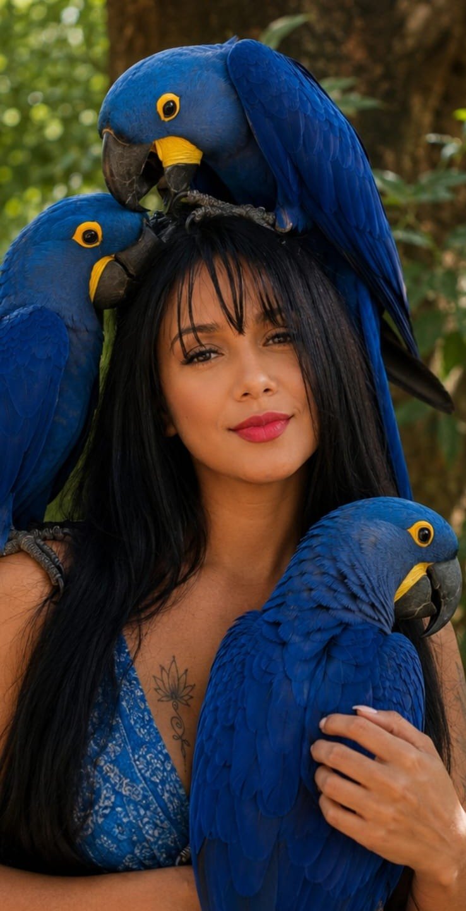

Mente Humano Animal
Dra. Janaína Cirqueira
Médica Veterinária · Comportamento e Reabilitação Animal
Fale comigo pelo WhatsApp
Conheça os programas
Depoimentos
Instagram · cavalos e conexão
YouTube
TikTok